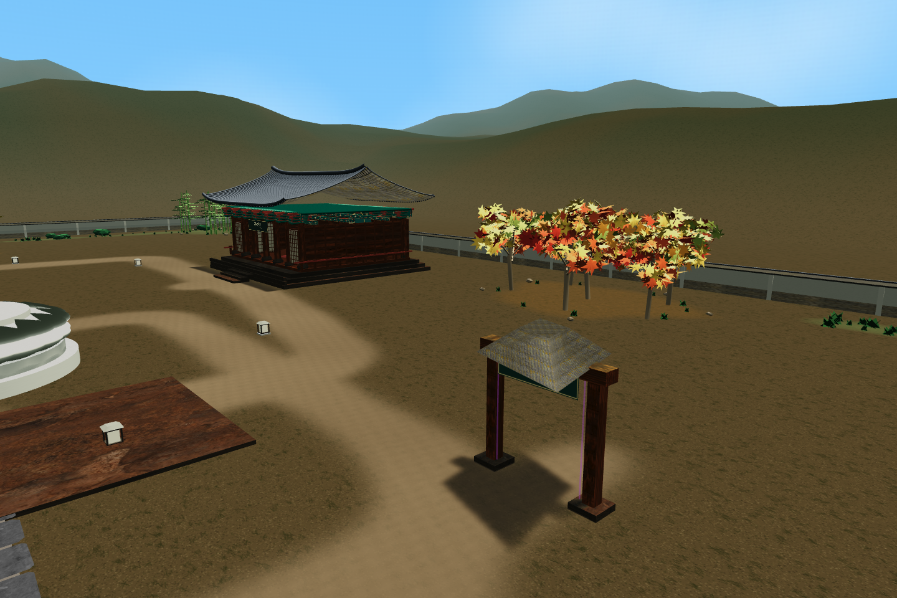
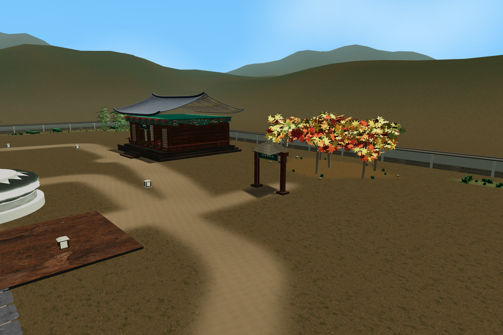

<meta charset="utf-8"><style>*{box-sizing:border-box}body{margin:0;background:#f5f3eb;color:#263f34;font-family:"Apple SD Gothic Neo",sans-serif}.sheet{width:1500px;padding:28px}h1{font-size:27px;margin:0 0 16px}.row{display:flex;gap:18px}figure{margin:0;width:50%}img{width:100%}figcaption{font-size:20px;margin-top:8px}</style><section class="sheet"><h1>시간과 공간의 방 · 뒤쪽 나무 가까이 이동</h1><div class="row"><figure><figcaption>변경 전</figcaption></figure><figure><figcaption>변경 후 · 산책길에서 이어지는 입구</figcaption></figure></div></section>